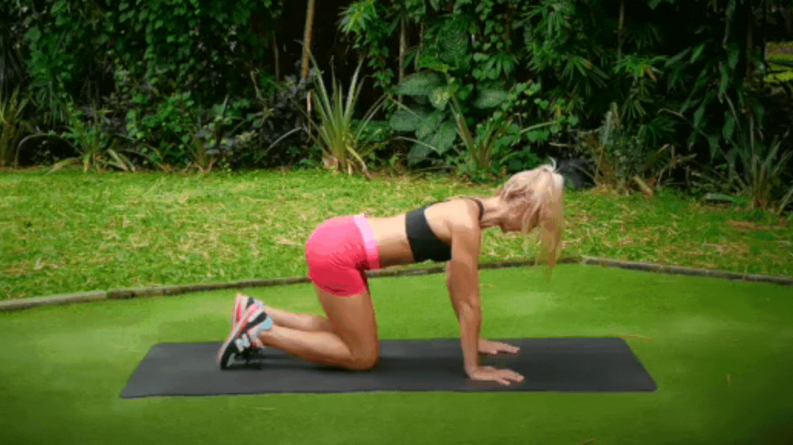
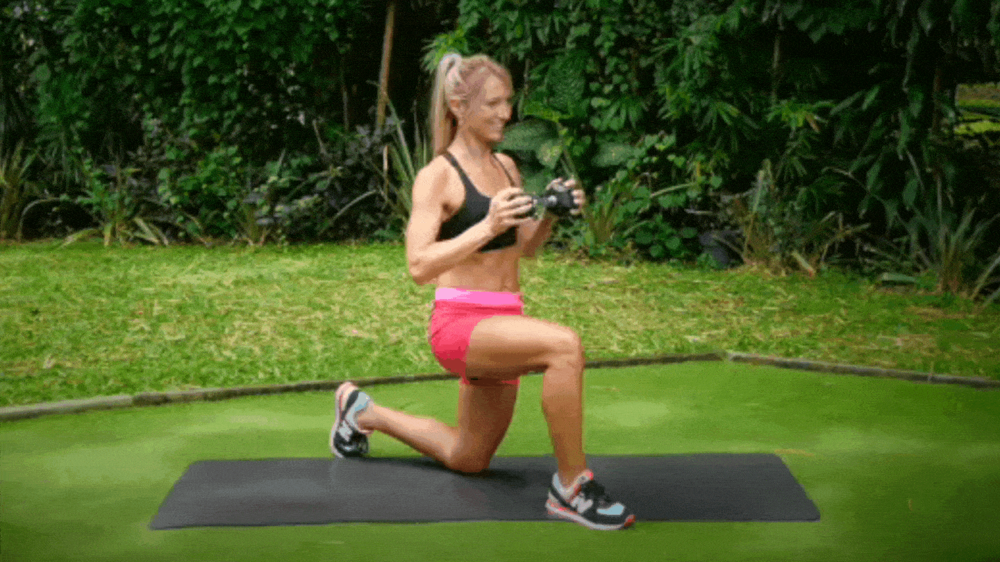
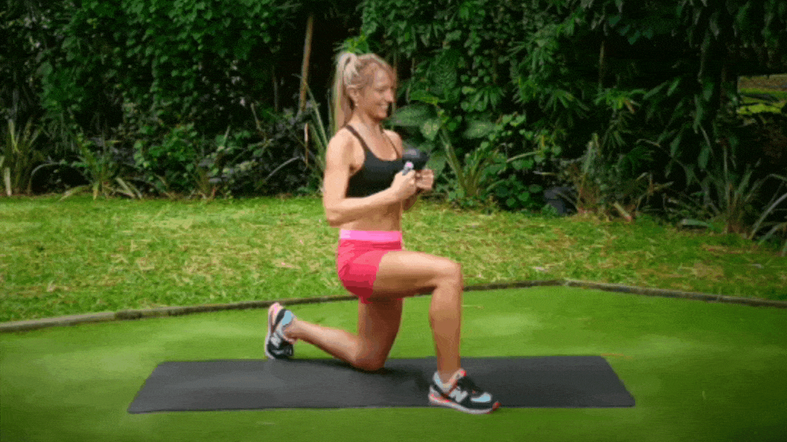
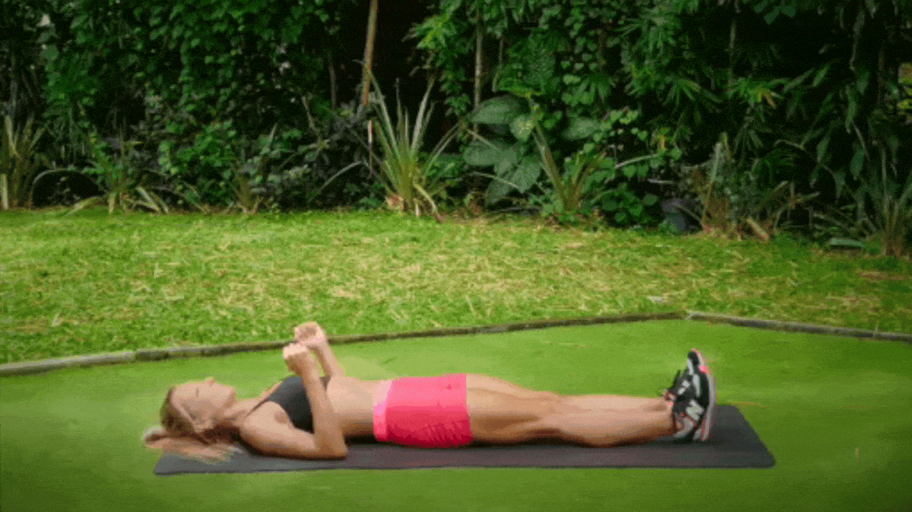
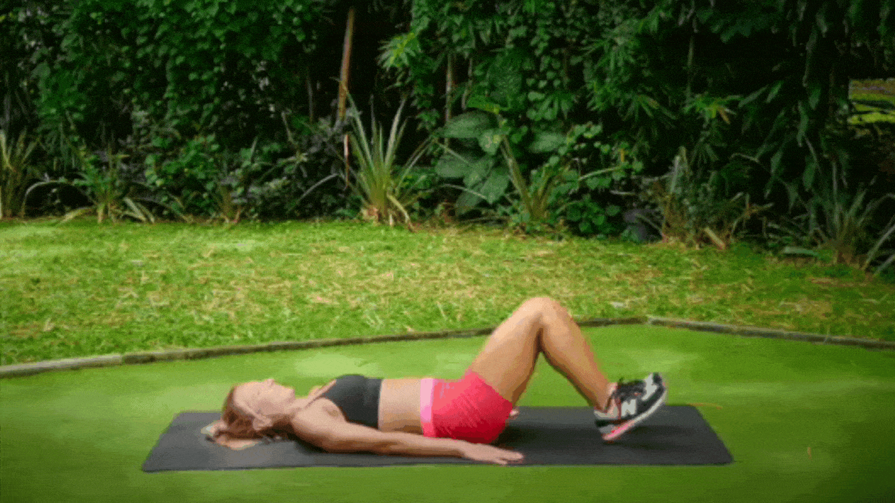
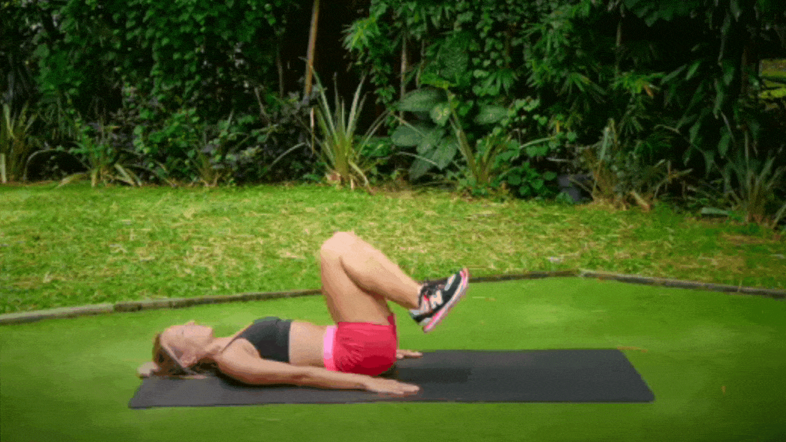
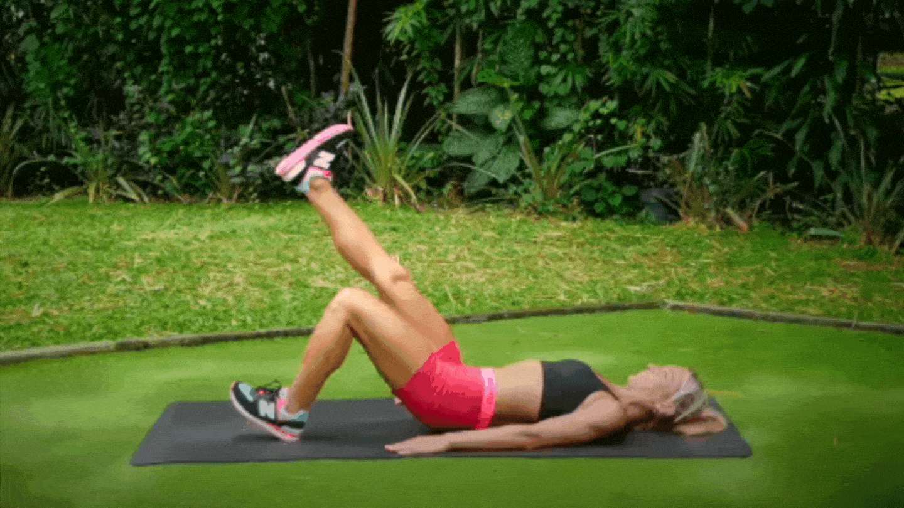
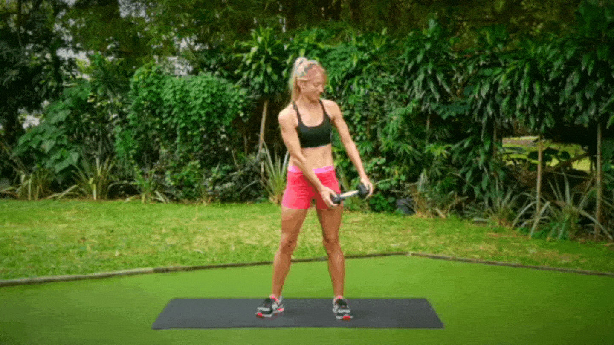
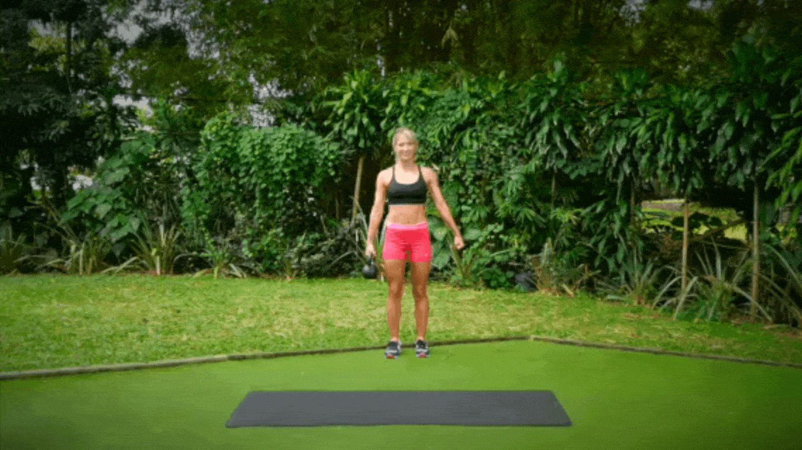
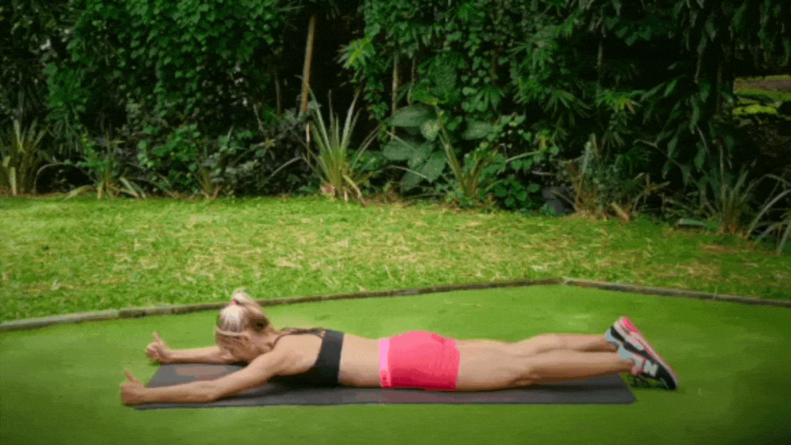

#1: Knee to Elbow Plank

You've most likely heard of full planks (high planks), side planks, and elbow planks, but today, we will add a bit of a challenge to this bodyweight plank variation.
- Begin in a full plank position (extended push-up position), with your hands planted firmly on the ground and your wrists, elbows, and shoulders stacked in a straight line.
- Engage your core and lift your left leg and right hand, bringing your left knee and right elbow together beneath you.
- Return your left foot and right hand to their starting positions and immediately bring your right knee and left elbow together beneath you.
- Repeat for the desired number of reps.
#2: Bird Dog

This next core exercise works the abs, low back, thighs, and glutes and helps improve stability, balance, and coordination.
- Begin on your hands and knees with your back straight and your hands shoulder-width apart.
- Engage your core.
- Simultaneously lift your right leg and push it back with your glute so it is straight out behind you and your left arm straight out in front of you.
- Hold this position for a second.
- Return to the starting position.
- Repeat for the desired number of reps.
- Repeat on the other side.
#3: Half-Kneeling Pallof Press

- Any exercise that starts with “half-kneeling” will be challenging and full of stability work. If this starting position is too difficult for you, you can perform this core exercise from a standing or a full-kneeling position. This will give you more stability during the exercise movement.
- Begin in a half-kneeling position, holding a dumbbell or kettlebell to your chest.
- Engage your core and push the weight straight out in front of you without moving the rest of your body or tipping over to one side.
- Hold the weight in the extended position for a second or two.
- Return to your starting position.
- Repeat for the desired number of reps.
- You can switch legs with each set.
#4: Half-Kneeling Halo with Kettlebell

We stay in the same half-kneeling position for this core work exercise to challenge our stability.
- Begin in a half-kneeling position, holding a kettlebell to your chest, handle side down.
- As you keep your core stable, circle the kettlebell around your head, returning to your starting position each time.
- First, circle clockwise, then counterclockwise, alternating each time.
- Repeat for the desired number of reps.
#5: Runner's Crunch

For this core exercise, we are putting a twist into one of the basics, the crunch. It's called a runner's crunch because you perform this while “running” simultaneously, using your hip flexors to raise and lower your alternating legs.
- Begin by lying on your back, legs extended out in front of you, and arms bent at 90 degrees.
- Engage your core and lift yourself off the ground, bringing your right knee to meet your left elbow.
- Alternate legs and arms right side to left side.
- Repeat for the desired number of reps.
#6: Reverse Crunch

- Begin by lying on your back with your arms at your sides and knees bent.
- Engage your core, raise your legs and bring your knees toward your chest as you bring your hips and lower body off the floor and reach your feet toward the ceiling.
- Slowly bring your hips back down to the mat and repeat. The further you can kick your legs up without losing good form or technique, the better!
- Repeat for the desired number of reps.
#7: Leg In and Outs

- Begin by lying on your back, arms by your side, and knees bent and tucked toward your upper body.
- Extend your legs completely, keeping your back flat on the floor.
- Hold your legs extended briefly, then slowly bring them back into the starting position.
- Repeat for the desired number of reps.
#8: Single-Leg Glute Bridge

This unilateral exercise is excellent for strengthening muscle imbalances as it works one side at a time.
- Begin by lying on your back with your knees bent, arms by your sides, and heels on the floor at hip-width apart.
- Lift your right leg and extend it straight parallel to your left thigh.
- Engage your core and lift your hips up off the ground, aligning with your left knee.
- Hold this position for a second or two, activating your glutes and keeping your hips aligned.
- Lower your hips to the starting position.
- Repeat for the desired amount of reps.
- Repeat on the other side.
#9: Standing Dumbbell Woodchop

- Stand tall with your feet shoulder-width apart.
- Grip a dumbbell, one hand on each side, and bring it down to your left hip.
- In one strong, controlled movement, engage your core and swing the dumbbell diagonally across your body up to your right shoulder.
- Repeat for the desired number of reps.
- Repeat on the other side.
#10: Single Kettlebell Farmer's Walk

- Hold a kettlebell in your right hand a few inches from your thigh.
- Holding this position, engage your core and walk forward.
- Do not allow your body to lean to one side or the other to compensate for the weight. You must keep your body upright at all times.
- Repeat for the desired number of steps.
- Repeat on the other side.
#11: Superman

- Lie facedown on the floor with your arms extended in front of you and your legs straight behind you.
- Engage your glutes and core, lift your arms and legs off the ground simultaneously, and squeeze your shoulder blades together.
- Hold this position for a second or two.
- Gently lower yourself back to the floor.
- Repeat for the desired number of reps.